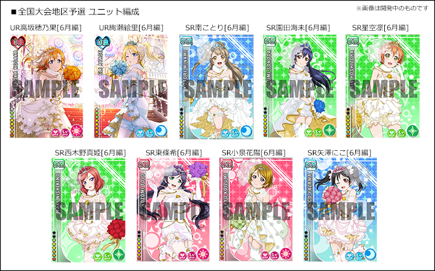

スクフェス全国大会
全国のスクフェスユーザーが腕を競い合う初めての大規模大会イベントです。
事務局が用意した端末で、固定のユニット・規定の曲で「ライブ」をプレイしていただき、
各地区で最もスコアが高かった上位2名が決勝の舞台へと進めます。
正確にリズムを刻む技術だけでなく、スキル発動の運が結果に影響することも…？
優勝を目指して、みんなでシャンシャン♪しましょう！
決勝大会ルール
6月7日（日）10：40～12：00「スクフェス感謝祭2015」イベント内の特設ステージにて行う、全国決勝のルールを発表いたします。
- 準決勝、決勝ともに4人対戦のスコアマッチ形式で行います
- 難易度はEXPERTで、3曲のメドレーになります
- 課題曲は「タカラモノズ」「ユメノトビラ」「KiRa-KiRa Sensation!」です
- 端末設定は基本的に地区予選と同じになります
- ユニットも地区予選と同じですが、特殊仕様で一切のスキル発動がなくなります（スキル発動がないためカットインは入りません）
- ライブ後のSCOREが同点の場合は、COMBO数がより多い方、『PERFECT』『GREAT』の数がより多い方、『GOOD』『BAD』『MISS』の数がより少ない方の順に順位を決定いたします
- コンティニューはできません
《端末環境》
使用端末：iPod touch 第5世代（iOS8）
※事務局にて用意した端末とヘッドフォンを使用していただきます。
※参加者自身で持ち込んだ端末、及びケースやアクセサリ類は使用できません。
※ケースや保護フィルムはついておりません。
※ステージ上のスクリーンへゲーム画面を出力するためライトニングケーブルを繋いでおり、外すことはできません。
※端末を手に持ってのプレイも、机においてのプレイも可能です。
※すべり止めマット及びクリーナークロスをご用意しております。
《ゲーム内環境》
ユニット編成：固定(UR高坂穂乃果[6月編]、UR絢瀬絵里[6月編]、SR南ことり[6月編]、SR園田海未[6月編]、SR星空凛[6月編]、SR西木野真姫[6月編]、SR東條希[6月編]、SR小泉花陽[6月編]、SR矢澤にこ[6月編]）

| カットイン | 大 |
|---|---|
| 文字サイズ | 大 |
| 音量バランス | 全てデフォルト |
| エフェクト | ON |
| タイミング調整 | デフォルト |
決勝大会ルール
| 開催日時 | 開催地 | 会場 |
| 4月29日(水・祝) | 中部 | 名古屋 吹上ホール |
| 5月 3日(日) | 東北 | 仙台・サンフェスタ4階レセプションホール |
| 5月 9日(土) | 九州 | 福岡・スターレーン2階ダイヤモンドホールA |
| 5月17日(日) | 近畿 | 大阪・ATCホール |
| 5月24日(日) | 北海道 | 札幌・アスティホール（アスティ45ビル4階） |
| 6月 6日(土) | 関東 | 東京・池袋サンシャインシティ展示ホールC |
※大会参加受付は終了いたしました
応募受付期間
※応募受付は終了いたしました
《応募期間》3月11日（水）～3月23日（月）AM11:59まで
参加費
無料（事前の参加登録が必要です）
※各会場への来場にかかる交通費などは参加者の負担となります。
参加資格
年齢制限：無し
※小学生以下の方は必ず保護者の方とご一緒にご来場ください。
日本国内在住の方
参加登録
専用フォームにて必要事項をご記入の上ご応募ください。
※注意事項を必ずお読みいただき、未成年の方は保護者の方の同意を得た上でご応募ください。
※応募はお一人さま１会場限りです。
※応募者多数の場合は抽選とさせていただきます。あらかじめご了承ください。なお、複数応募をされた場合は参加対象から外させていただく可能性がございます。
参加特典
《参加者全員》
「スクフェス全国大会 参加証」＆「スクフェス特製シール」
↑スクフェス特製シール
※スクフェス特製シールは、今後のブシロード出展イベント等でも配布を予定しております
《地区予選大会 優勝者》
「スクフェス全国大会 特製ファイナリストＴシャツ」
大会概要
トーナメント形式の個人戦です。回戦ごとに複数名のグループで「ライブ」の課題曲１曲を固定ユニットでプレイし、各グループ内の「SCORE」上位1〜2名が次の回戦へ進出となります。これを繰り返し、最終的に勝ち残った1名が優勝となります。 「午前の部」「午後の部」それぞれの優勝者1名ずつを、6月7日(日)の「スクフェス感謝祭2015」内、特設ステージにて行なう決勝大会へご招待いたします。
※グループの人数や次回戦への進出人数は、大会の参加人数などをもとにそれぞれ決定いたします。
※決勝大会参加に伴い発生する交通費（往復）、宿泊費(6月6日より1泊)は当事務局にて負担いたします。（東京地区予選の優勝者には交通費のみ支給いたします）
※優勝者の方が決勝大会への参加を辞退された場合、次点の方を繰り上げで決勝大会へご招待いたします。
大会ルール
- ライブ後のSCOREが同点の場合は、COMBO数がより多い方、『PERFECT』『GREAT』の数がより多い方、『GOOD』『BAD』『MISS』の数がより少ない方の順に順位を決定いたします。
- 次の回戦へ進む可能性のある参加者同士で、上記方法でも順位が付かない場合は同時に次の回戦へ進めます。 なお、決勝戦に関しては順位が付くまでサドンデスとして再度ライブをプレイしていただきます。
- コンティニューはできません。
《課題曲》
「それは僕たちの奇跡」 ※難易度はEASY/NORMAL/HARD/EXPERTからお選びいただけます
《地区大会端末環境》
使用端末：iPod touch 第5世代（iOS8）
※事務局にて用意した端末とヘッドフォンを使用していただきます。
※参加者自身で持ち込んだ端末、及びケースやアクセサリ類は使用できません。
※ケースや保護フィルムはついておりません。
※充電のためライトニングケーブルを繋いでおり、外すことはできません。(プレイ中のみケーブルを外すことも禁止とさせていただきます) ※端末を手に持ってのプレイも、机においてのプレイも可能です。
※すべり止めマット及びクリーナークロスをご用意しております。
《ゲーム内環境》
ユニット編成：固定(UR高坂穂乃果[6月編]、UR絢瀬絵里[6月編]、SR南ことり[6月編]、SR園田海未[6月編]、SR星空凛[6月編]、SR西木野真姫[6月編]、SR東條希[6月編]、SR小泉花陽[6月編]、SR矢澤にこ[6月編]）
| カットイン | 大 |
|---|---|
| 文字サイズ | 大 |
| 音量バランス | 全てデフォルト |
| エフェクト | ON |
| タイミング調整 | デフォルト |
※上記項目はゲーム内の「その他」＞「各種設定」から確認・設定できます
注意事項
- 大会当日、ご本人様確認のため身分証を必ずお持ちください。
- スタッフの指示があるまで端末にお手を触れないでください。
- ライブ終了後、スタッフがSCOREを確認しますので、速やかに端末から手を離してお待ちください。お客様の操作によりSCOREが確認できなかった場合、ライブ失敗と判断させていただきます。
- ホームボタン、電源ボタンなど大会進行に関係の無い端末の操作は行なわないでください。
禁止事項
- 公序良俗に反する発言や行動、及び迷惑行為等を行なうこと
- 故意に端末を破損、または破損する恐れのある行為 ※端末を破損させた場合、端末の代金を請求させていただく可能性があります。
- 端末内データの改ざんや不正な操作を行なうこと
※上記の禁止行為を行なった場合や、そのほかにもスタッフが試合の進行に支障をきたすと判断した場合、大会参加権利を剥奪する可能性があります。
お問い合わせ先
スクフェス感謝祭2015事務局 【メール】 festival2015@bushimo.jp
※こちらは本大会に関するお問い合わせのみの受付となります。アプリに関するお問い合わせはお問い合わせフォームをご利用下さい。
※携帯キャリアメールからのお問い合わせの場合、スクフェス感謝祭2015事務局(以下、事務局)にメールが届かず確認できない場合がございます
※事務局からの返信は同アドレスから送信いたします。festival2015@bushimo.jpからのメールを受信できるよう事前に設定をお願いいたします。
※フリーメールのご利用によって発生する不具合については、原因の特定ができない場合がございます。あらかじめご了承くださいませ。
物販のご案内
全国大会地区予選の各会場（東京大会を除く）にてグッズの販売を行うことが決定いたしました。
発売中のラブライブ！関連グッズの他、6/6，7開催の『スクフェス感謝祭2015』記念グッズのうち
「ラブライブ！クリーナークロス スクフェス感謝祭2015」
「ラブライブ！クリアファイル スクフェス感謝祭2015」
を先行販売いたします。
新商品

既存商品
発売中のラブライブ！関連グッズ各種の販売を予定しております
※グッズの販売は各会場午前10時からを予定しております。（当日の状況により販売開始時間が変更になる可能性があります）
※全国大会に参加されないお客様もグッズをご購入いただけます。全国大会の観覧につきましては、当日の状況によりお断りする場合もございますのでご了承ください。
※地区予選午前の部に参加されるお客様につきましては、新商品「ラブライブ！クリーナークロス スクフェス感謝祭2015」「ラブライブ！クリアファイル スクフェス感謝祭2015」のみ大会開始前にご購入いただけます。
※地区予選東京大会につきましては、同日開催のスクフェス感謝祭2015内のグッズ販売をご利用下さい。